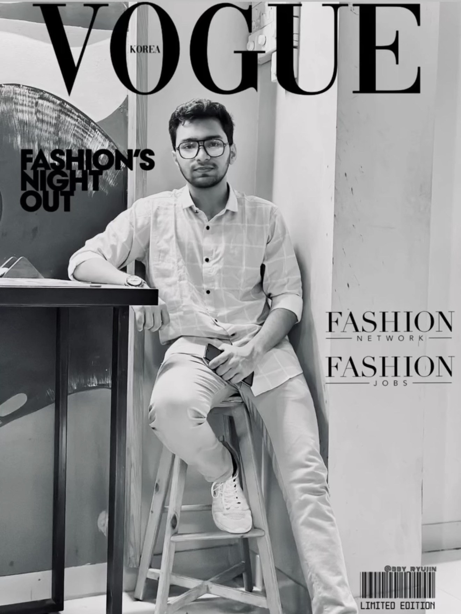
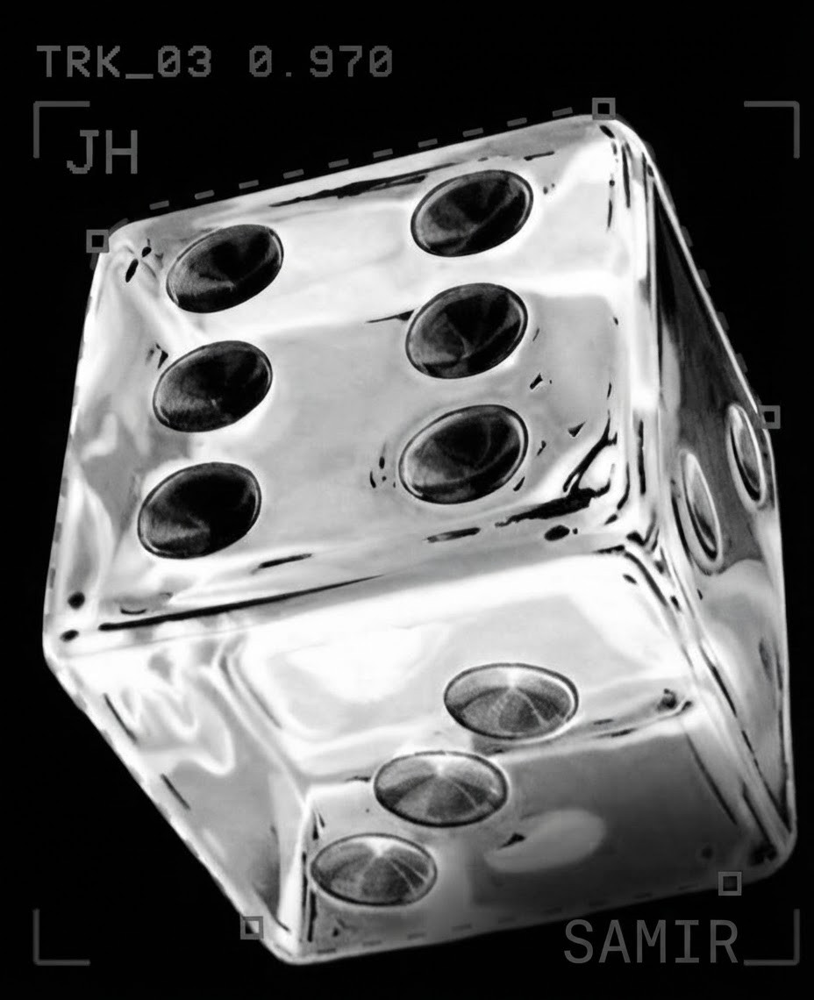

Visual storyteller and lifelong learner based in Dhaka, Bangladesh — chasing fitness, story-based games, and the quiet frames of everyday life.


I'm JH Samir — a visual storyteller and lifelong learner based in Dhaka, Bangladesh. What draws me to a camera is the ordinary: an afternoon of light, a street mid-motion, a face caught mid-thought — the moments easy to miss unless you go looking for them through, as I like to think of it, the lens of the human mind.
Away from the viewfinder, I'm chasing my personal best at the gym or spending an evening with a good game — both places where I first learned patience: one rep, one level, one frame at a time.
A handful of frames from recent projects. Press the left and right d-pad (or your arrow keys) to browse, tap ✕ or the screen to open a frame, and drag to turn the machine.